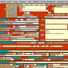

Archives parlementaires / Parliamentary archives
The Archives parlementaires is a chronologically-ordered edited collection of sources on the French Revolution. It was conceived in the mid 19th century as a project to produce a definitive record of parliamentary deliberations and also includes letters, reports, speeches, and other first-hand accounts from a great variety of published and archival sources. FRDA currently contains the AP volumes covering the years 1787-1794, which can be searched using ARTFL's PhiloLogic 4 open source software platform. The texts have been marked up using TEI so that speakers, places, dates, and terms in the published index can be easily found. Users can see both scanned images of the AP pages or just the texts.
Images de la Révolution française / Images of the French Revolution
The 5,126 images selected from the BnF collections for this digital archive concentrate solely on the period from 1787 through 1799, from the years immediately preceding the outbreak of the Revolution through the emergence of Napoleon. Only visual materials directly tied to the Revolution itself are included. The creators of the initial incarnation of the Images anticipated that scholars would use them for their research and teaching purposes, and that the public at large would find in them an important way of learning more about this foundational moment for the French nation. Detailed metadata exists for the images, so that researchers can search by artist, subject, genre, and place. Users can also browse and search within different themes.
French Revolutionary Data
The data available on this site is the product of data cleaning performed by ARTFL (The Project for American and French Research on the Treasury of the French Language) at the University of Chicago. As a result, these XML files contain fewer OCR errors and more consistent markup than the materials currently searchable through the FRDA interface. Work is currently underway to disambiguate names with the XML corpus, linking each name to an individual. Many of these individuals (the parliamentarian deputies) are associated with biographical metadata in a database developed by the Service de la Bibliothèque et des Archives de l’Assemblée nationale.